The Foundations of Music Literacy: A Self-Paced Course
This course is designed to be a visual-first journey through music theory. Whether you are working through this on your own or with an instructor, use the patterns and diagrams as your primary guide.
Module 1: The Building Blocks
Lesson 1: How many unique notes are there?
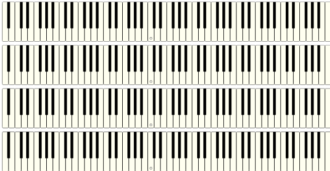
Lesson 2: The Piano Layout
While the alphabet has 26 letters, standard music only has 12 notes. These 12 notes repeat over and over again in a cycle.
- The Naturals: 7 white keys.
- The Accidentals: 5 black keys.
The piano is a map of these 12 notes. Notice the pattern of the black keys: they always appear in groups of 2 and 3. This pattern allows you to find any note instantly.
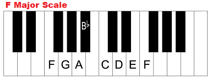
Module 2: The Physics of Sound
Lesson 3: Pitch and Frequency
Pitch is determined by Frequency (vibrations per second).
Fast vibrations = High pitch.
Slow vibrations = Low pitch.
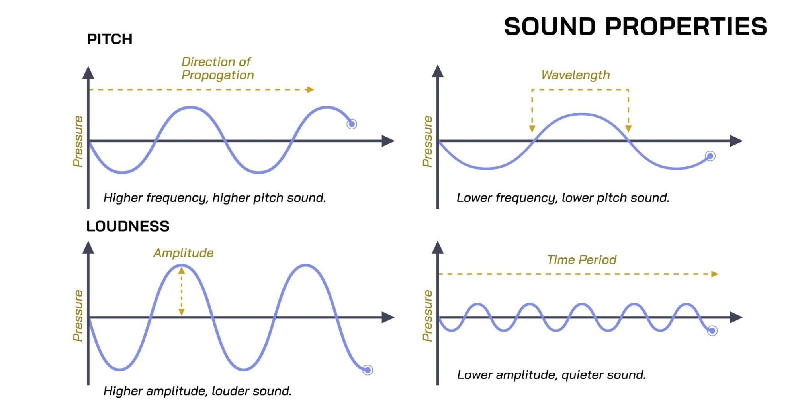
Lesson 4: The Octave Ratio (2:1)
An octave is a perfect 2:1 mathematical ratio. If you double the frequency, you get the same note at a higher register. This is why the 12-note pattern can repeat forever.
Imagine a string vibrating back and forth 440 times every second. We hear this specific speed as the note A.
If you cut that string exactly in half or tighten it until it vibrates twice as fast (880 times per second), you hear the exact same note, just one register, or octave higher.
When you press a piano key down, a pad called a “hammer” hits the string with the length that corresponds with the note frequency.
Module 3: Music Foundations: Key Signatures
Lesson 5: Half and Whole Steps
- Half Step (H): Moving to the very next key - no keys in between (including black keys).
- Whole Step (W): Moving two half steps (skipping one key).
Lesson 6: The Major Key Formula
Rather than seeing music as a set of rules to memorize, we are going to look at it as a system of overlapping patterns.
The "Major Key Formula" is the specific tool you use to solve for this primary pattern starting from any of the 12 notes.
W - W - H - W - W - W - H
This formula is used to determine the pattern of 7 of the 12 notes that make up that note's “Major Key.”
This is the key of C, which uses only white notes. All 12 Major keys are built using the exact same mathematical "DNA": Whole - Whole - Half - Whole - Whole - Whole - Half.
Because there are 12 unique notes, there are 12 distinct Major key signatures. Each note acts as a "Root" that commands its own specific collection of notes referred to as Key Signature or Key.
To start, let's look at the key of C Major:
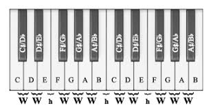
The names of the white keys are fixed and don’t change. These are referred to as Natural notes. Going up a half step from C, or down a half step from D, we run into a black note.
- Sharp is represented with the symbol #
- Flat is represented with the symbol b
- Natural is represented with the symbol ♮ (Typically not often seen, but a must know for specific situations.)
Lesson 7: The Black Keys
All of the black notes have 2 names depending on which key they are part of: a Sharp version, and a Flat version, but in reality they sound like the exact same note, just with a different name depending on which note's Major Key it is a part of.
Lesson 8: How do you know which name to use?
A scale is a pattern of notes in which the 7 notes of a major key are played. To play a scale, the first note sets the “root” note. Here is the scale for the key of C Major.
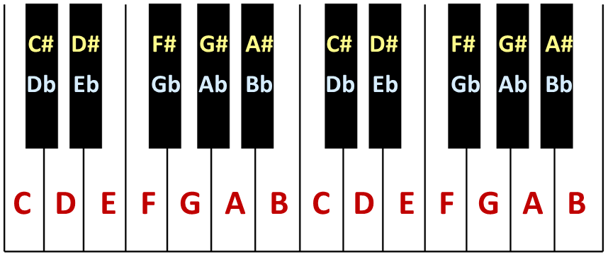
The notes in a scale move in a single, unbroken alphabetical line from A to G before repeating the pattern. This one starts with C and is the root.
You determine which name to use based on the root note of the major key you are in.
To demonstrate, let’s try the key of F Major, which only uses 1 black note.
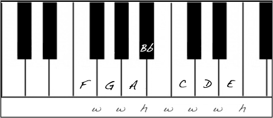
Introducing Major Keys with flats (b) and sharps (#):
Let's apply this logic to the F Major scale. Start with F and apply the Major Key Formula: W - W - H - W - W - W - H
You will notice there is one black note. Should it be called Bb(B flat) or A#(A sharp)?
This key cannot have an A natural and an A sharp, because then there would be 2 “A” notes and would break the alphabetical order. The 4th note has to some sort of B, which is why this black note is a Bb(B flat).
Now let’s examine the key of G, which has one sharp. We use G A B C D E F with G being the “root”. Following the formula, the 7th note is a black note - either F#(F sharp) or Gb(G flat).
With being in the key of G Major, we can’t have a G♮(G natural) and Gb(G flat) in the same key, so it has to be F#(F sharp).
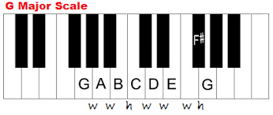
Module 4: The Master Pattern
Lesson 9: Playing within the Key
When you choose a starting note, or root, you are selecting a specific "gravity” or center for the music. Every note in that key relates back to the root based on its position in the key signature.
Let’s practice scales using the key of C. The C Major scale starts on the root note, C in this case, and goes up in order for 7 notes until you reach the next root note an octave higher.
C D E F G A B C.
C D E F G A B C(octave) B A G F E D C
Lesson 11: Intervals
An interval is the physical distance between two pitches. Notes played in close proximity interact with each other differently than notes separated by a wide gap, creating unique tension and resolution.
Review the following interval types starting from C:
- Major Second: C and D
- Major Third: C and E
- Perfect Fourth: C and F
- Perfect Fifth: C and G
- Major Sixth: C and A
- Major Seventh: C and B
- Octaves: C and C
The Openness of the 5th: The Perfect 5th is the most "open" sounding interval in music. It feels stable, clear, and hollow.
The "Upside Down" Mirror (Inversion): The 4th and the 5th are actually two sides of the same coin. If you play a C and the G above it, you have a 5th. If you take that same C and play the G below it, the distance becomes a 4th.
Practice interval training: https://tonedear.com/ear-training/intervals
Module 5: The Harmonic Landscape (Major vs. Minor)
Lesson 12: Chords
A chord is the sound of three or more different notes played together.
To build a standard chord (also known as a Triad), you start with your Root note and simply "stack" notes by skipping every other letter in the scale:
- 1 (Root): The foundation.
- 3 (Third): The "flavor" note that fills the middle.
- 5 (Fifth): The "anchor" note that provides the outer frame.
Lesson 13: Chord Qualities
The difference between a Major chord and a Minor chord comes down entirely to the 3rd (the middle note).
- Major Chord: The 3rd is exactly 4 half-steps away from the Root.
- Minor Chord: The 3rd is lowered by just one half-step (3 half-steps away from the Root).
Exercise: Build a 1-3-5 triad for every note in the C Major scale
Step 1: The "Skip-Step" Construction
Start on C. Skip D, play E (the 3rd). Skip F, play G (the 5th). This is the "1 chord".
Step 2: Climbing the Scale
Move your hand up one white key to D. Play D-F-A. This is the "2 chord" (Minor).
Lesson 14: Chords Within a Key Signature
- 1st Note: Major (I) — The "Home" chord.
- 2nd Note: Minor (ii) — A softer, more subdued chord.
- 3rd Note: Minor (iii) — A reflective and calm chord.
- 4th Note: Major (IV) — A strong, "Perfect" feeling chord.
- 5th Note: Major (V) — The "Dominant" chord.
- 6th Note: Minor (vi) — The "Relative Minor."
- 7th Note: Diminished (vii°) — Tense and urgent.
Module 7: Chord Progressions
Lesson 18: Chord Function (V to I)
The V chord creates tension. This tension "wants" to resolve back to the I chord (Home).
Lesson 19: Secondary Dominants
A Secondary Dominant is a major chord borrowed from outside the key to "point" toward a specific destination, adding a professional polish to the progression.
Module 8: Reading Music
Lesson 20: The Grand Staff
The musical staff is a vertical graph. The higher a note sits on the lines and spaces, the higher its frequency.
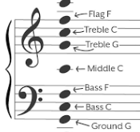
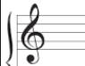
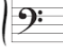
Lesson 21: The Grand Staff Bridge
The Treble and Bass staves are joined by Middle C. It sits on its own small ledger line exactly between the two staves.
Lesson 22: Solfege
You may recognize the solfege way to reference notes in a key from the movie The Sound of Music song “Do-Re-Mi.” This convention can be applied to any key.
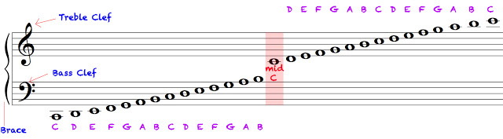